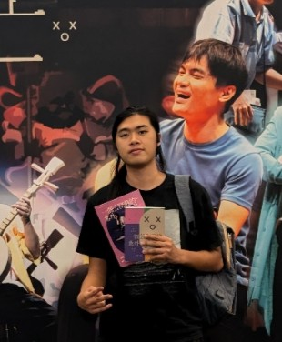

Windmill
靈感源自農曆新年市集轉動祈福的紙風車記憶。運用 Low-Poly 低多邊形切面、光影層次與冷暖色系，透過矩陣座標旋轉演算法驅動陣列自旋，呈現年節時序與祈願意象。
Game
Generative Art
Unity Programmer
鍾 紹宇
對我而言，創作不只是讓畫面動起來，而是透過程式構築世界，將技術與創意融合並帶入沉浸其中的體驗。
以程式構築法則，以光影形狀想像每一個世界都因創意而重生。

2023 — 現在
樹德科技大學動畫與遊戲設計系
計算機與資訊工程相關學習
以程式、數學規則與隨機／排列邏輯，生成視覺圖樣。
靈感源自農曆新年市集轉動祈福的紙風車記憶。運用 Low-Poly 低多邊形切面、光影層次與冷暖色系，透過矩陣座標旋轉演算法驅動陣列自旋，呈現年節時序與祈願意象。

取材自古典建築花磚與窗櫺裝飾美學，運用三角函數與對稱反射演算法，生成同心圓、四葉飾與幾何交疊的裝飾圖樣。

以鑰匙與符號作為視覺元素，透過規則化排列、軸心與交錯陣列演算法，在幾何秩序中營造封印與解鎖交織的神秘儀式感。
將遊戲開發流程模組化，讓狀態與行為更容易管理。

以有限狀態機（FSM）管理遊戲角色行為，將狀態、參數與轉換流程拆分，讓角色控制邏輯更清楚，也更容易擴充。
特色
高度架構化、組件化、可視化

主要分為四個區塊：State Machine、Parameters、State 與 Transition。透過狀態轉換組織 Idle、Attack 等行為，將角色邏輯拆成可重複使用的模組。

以 CarneFSM 為基礎的架構設計，將角色行為與狀態切換組織成可維護的結構，方便管理不同角色與戰鬥流程。

透過 Parameters、Actions、States 與 Transitions 的關係，將狀態資料與執行行為分離，提升系統擴充性與可讀性。

以「雙人協作」為核心的彈幕射擊遊戲，強調玩家間的配合與即時操作反應。作品特色為拼圖式技能系統，玩家透過放置不同形狀的拼圖方塊，組合角色技能。
系統將拼圖方塊抽象為資料模型，並建立「棋盤配置 → 技能結果」的轉換邏輯，使玩家配置即時影響戰鬥表現。

透過影像互動與感測技術，將人體動態轉化為即時數位語彙，探索身體、空間與數位創作之間的連結。

以聲音與互動作為作品核心，透過即時回饋讓參與者感受聲音輸入與視覺變化的關係，將互動體驗轉化為直覺且易理解的遊戲化形式。